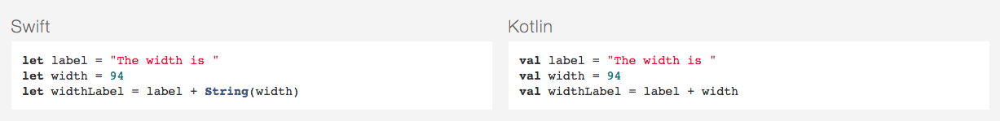
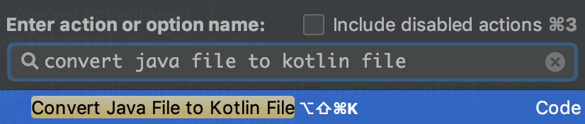
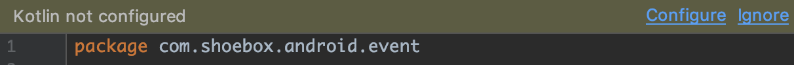
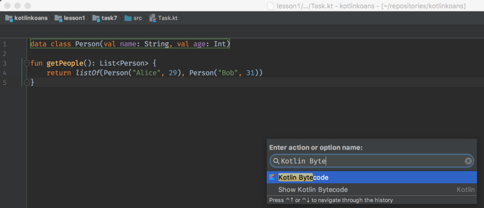
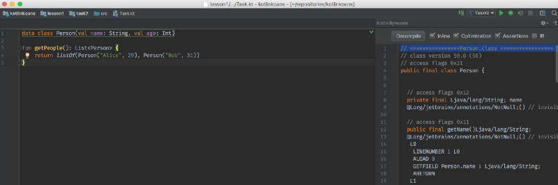
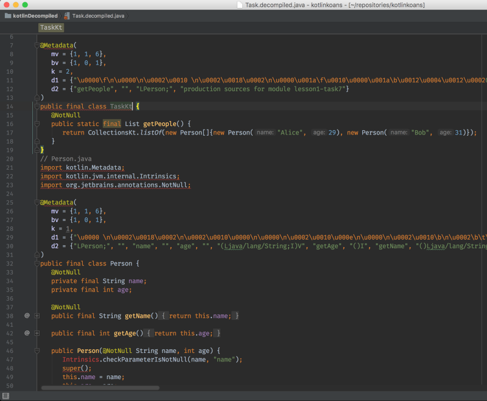
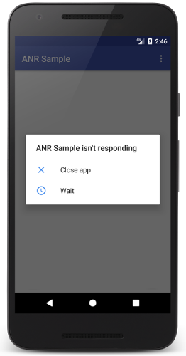

Getting started
Architecture
Kotlin for beginners
Advanced Kotlin
More than Kotlin
Tips & Tricks
Android Studio 3.2
https://developer.android.com/studio/
JDK 8 or just use embedded Android Studio JDK
https://www.oracle.com/technetwork/java/javase/downloads/jdk8-downloads-2133151.html
Workshop app source code
git clone https://github.com/IonutGavris/shoebox-android.gitShoeBox promo
The ShoeBox story
The Android app
"Kotlin is a functional programming language that allows writing more elegant, expressive code."
"Kotlin is a game changer for the Android Platform development and it's Fun!"
"Switching to Kotlin was rather difficult, especially for developers without prior functional programming experience."
Create a POJO with getters, setters, equals(), hashCode(), toString() and copy() in a single line:
data class Customer(val name: String, val email: String, val company: String)Or filter a list using a lambda expression:
val positiveNumbers = list.filter { it > 0 }Want a singleton? Create an object:
object ThisIsASingleton {
val companyName: String = "JetBrains"
}Get rid of those pesky NullPointerExceptions, you know, The Billion Dollar Mistake
var output: String
output = null // Compilation errorKotlin protects you from mistakenly operating on nullable types
val name: String? = null // Nullable type
println(name.length()) // Compilation errorAnd if you check a type is right, the compiler will auto-cast it for you
fun calculateTotal(obj: Any) {
if (obj is Invoice)
obj.calculateTotal()
}Use any existing library on the JVM, as there's 100% compatibility, including SAM support.
import io.reactivex.Flowable
import io.reactivex.schedulers.Schedulers
Flowable
.fromCallable {
Thread.sleep(1000) // imitate expensive computation
"Done"
}
.subscribeOn(Schedulers.io())
.observeOn(Schedulers.single())
.subscribe(::println, Throwable::printStackTrace)Target either the JVM or JavaScript. Write code in Kotlin and decide where you want to deploy to
import kotlin.browser.window
fun onLoad() {
window.document.body!!.innerHTML += "<br/>Hello, Kotlin!"
}A language needs tooling and JetBrains provides the best integration for Kotlin in Android Studio.
Kotlin is 100% interoperable with Java. You can literally continue work on your old Java projects using Kotlin. All your favorite Java frameworks are still available, and whatever framework you'll write in Kotlin is easily adopted by your stubborn Java loving friend.
Kotlin isn't some weird language born in academia. Its syntax is familiar to any programmer coming from the OOP domain, and can be more or less understood from the get go. There are of course some differences from Java such as the reworked constructors or the val var variable declarations. The snippet below presents most of the basics:
class Foo {
val b: String = "b" // val means unmodifiable
var i: Int = 0 // var means modifiable
fun hello() {
val str = "Hello"
print("$str World")
}
fun sum(x: Int, y: Int): Int {
return x + y
}
fun maxOf(a: Float, b: Float) = if (a > b) a else b
}It's as if a smarter and more readable version of Java's String.format() was built into the language:
val x = 4
val y = 7
print("sum of $x and $y is ${x + y}") // sum of 4 and 7 is 11Kotlin will infer your types wherever you feel it will improve readability:
val a = "abc" // type inferred to String
val b = 4 // type inferred to Int
val c: Double = 0.7 // type declared explicitly
val d: List<String> = ArrayList() // type declared explicitlyThe Kotlin compiler tracks your logic and auto-casts types if possible, which means no more instanceof checks followed by explicit casts:
if (obj is String) {
print(obj.toUpperCase()) // obj is now known to be a String
}You can stop calling equals() explicitly, because the == operator now checks for structural equality:
val john1 = Person("John")
val john2 = Person("John")
john1 == john2 // true (structural equality)
john1 === john2 // false (referential equality)No need to define several similar methods with varying arguments:
fun build(title: String, width: Int = 800, height: Int = 600) {
Frame(title, width, height)
}Combined with default arguments, named arguments eliminates the need for builders:
build("PacMan", 400, 300) // equivalent
build(title = "PacMan", width = 400, height = 300) // equivalent
build(width = 400, height = 300, title = "PacMan") // equivalentThe switch case is replaced with the much more readable and flexible when expression:
when (x) {
1 -> print("x is 1")
2 -> print("x is 2")
3, 4 -> print("x is 3 or 4")
in 5..10 -> print("x is 5, 6, 7, 8, 9, or 10")
else -> print("x is out of range")
}It works both as an expression or a statement, and with or without an argument:
val res: Boolean = when {
obj == null -> false
obj is String -> true
else -> throw IllegalStateException()
}Custom set & get behavior can be added to public fields, which means we can stop bloating our code with mindless getters & setters.
class Frame {
var width: Int = 800
var height: Int = 600
val pixels: Int
get() = width * height
}It's a POJO complete with toString(), equals(), hashCode(), and copy(), and unlike in Java it won't take up 100 lines of code:
data class Person(val name: String,
var email: String,
var age: Int)
val john = Person("John", "john@gmail.com", 112)A predefined set of operators can be overloaded to improve readability:
data class Vec(val x: Float, val y: Float) {
operator fun plus(v: Vec) = Vec(x + v.x, y + v.y)
}
val v = Vec(2f, 3f) + Vec(4f, 1f)Some objects can be destructured, which is for example useful for iterating maps:
for ((key, value) in map) {
print("Key: $key")
print("Value: $value")
}For readability's sake:
for (i in 1..100) { ... }
for (i in 0 until 100) { ... }
for (i in 2..10 step 2) { ... }
for (i in 10 downTo 1) { ... }
if (x in 1..10) { ... }Remember the first time you had to sort a List in Java? You couldn't find a sort() function so you had to ask either your tutor or google to learn of Collections.sort(). And later when you had to capitalize a String, you ended up writing your own helper function because you didn't know of StringUtils.capitalize().
If only there was a way to add new functions to old classes; that way your IDE could help you find the right function in code-completion. In Kotlin you can do exactly that:
fun String.replaceSpaces(): String {
return this.replace(' ', '_')
}
val formatted = str.replaceSpaces()The standard library extends the functionality of Java's original types, which was especially needed for String:
str.removeSuffix(".txt")
str.capitalize()
str.substringAfterLast("/")
str.replaceAfter(":", "classified")Java is what we should call an almost statically typed language. In it, a variable of type String is not guaranteed to refer to a String— it might refer to null. Even though we are used to this, it negates the safety of static type checking, and as a result Java developers have to live in constant fear of NPEs.
Kotlin resolves this by distinguishing between non-null types and nullable types. Types are non-null by default, and can be made nullable by adding a ? like so:
var a: String = "abc"
a = null // compile error
var b: String? = "xyz"
b = null // no problemKotlin forces you to guard against NPEs whenever you access a nullable type:
val x = b.length // compile error: b might be nullAnd while this might seem cumbersome, it's really a breeze thanks to a few of its features. We still have smart casts, which casts nullable types to non-null wherever possible:
if (b == null) return
val x = b.length // no problemWe could also use a safe call ?., which evaluates to null instead of throwing a NPE:
val x = b?.length // type of x is nullable IntSafe calls can be chained together to avoid those nested if-not-null checks we sometimes write in other languages, and if we want a default value other than null we can use the elvis operator ?: :
val name = ship?.captain?.name ?: "unknown"If none of that works for you, and you absolutely need a NPE, you will have to ask for it explicitly:
val x = b?.length ?: throw NullPointerException() // same as below
val x = b!!.length // same as aboveOh boy, is this a good lambda system — perfectly balanced between readability and terseness, thanks to some clever design choices. The syntax is first of all straight forward:
val sum = { x: Int, y: Int -> x + y } // type: (Int, Int) -> Int
val res = sum(4,7) // res == 11And here come the clever bits:
it.These facts combined makes the following three lines equivalent:
numbers.filter({ x -> x.isPrime() })
numbers.filter { x -> x.isPrime() }
numbers.filter { it.isPrime() }And this allows us to write concise functional code — just look at this beauty:
persons
.filter { it.age >= 18 }
.sortedBy { it.name }
.map { it.email }
.forEach { print(it) }Kotlin's lambda system combined with extension functions makes it ideal for DSL creation. Check out Anko for an example of a DSL that aims to enhance Android development:
verticalLayout {
padding = dip(30)
editText {
hint = "Name"
textSize = 24f
}
editText {
hint = "Password"
textSize = 24f
}
button("Login") {
textSize = 26f
}
}You have a number of options if you intend to get started with Kotlin, but I highly recommend using IntelliJ which comes bundled with Kotlin—its features demonstrate the advantage of having the same people design both language and IDE.
MVVM + Dagger + RxJava/RxKotlin
The main players in the MVVM pattern are:
At a first glance, MVVM seems very similar to the Model-View-Presenter pattern, because both of them do a great job in abstracting the view's state and behavior. The Presentation Model abstracts a View independent from a specific user-interface platform, whereas the MVVM pattern was created to simplify the event driven programming of user interfaces.
If the MVP pattern meant that the Presenter was telling the View directly what to display, in MVVM, ViewModel exposes streams of events to which the Views can bind to. Like this, the ViewModel does not need to hold a reference to the View anymore, like the Presenter is. This also means that all the interfaces that the MVP pattern requires, are now dropped.
The Views also notify the ViewModel about different actions. Thus, the MVVM pattern supports two-way data binding between the View and ViewModel and there is a many-to-one relationship between View and ViewModel. View has a reference to ViewModel but ViewModel has no information about the View. The consumer of the data should know about the producer, but the producer — the ViewModel — doesn't know, and doesn't care, who consumes the data.
Model-View-ViewModel class structure
A fast dependency injector for Android and Java.
Dagger 2 is a compile-time evolution approach to dependency injection. Taking the approach started in Dagger 1.x to its ultimate conclusion, Dagger 2.x eliminates all reflection, and improves code clarity by removing the traditional ObjectGraph/Injector in favor of user-specified @Component interfaces.

The Kotlin plugin is bundled with Android Studio starting from version 3.0. If you use an earlier version, you'll need to install the Kotlin plugin. Go to File | Settings | Plugins | Install JetBrains plugin... and then search for and install Kotlin. If you are looking at the "Welcome to Android Studio" screen, choose Configure | Plugins | Install JetBrains plugin... You'll need to restart the IDE after this completes.
Open AgeSelectedEvent.java file. Then invoke action Convert Java File to Kotlin File. You can do it by several ways. The easiest one is to invoke Find Action and start typing an action name (like in a screencast below). Alternatively you can call this option via the Code | Convert Java File to Kotlin File menu entry or by using the corresponding shortcut (you can find it at the menu entry).

After the conversion you should have a class written in Kotlin.
class AgeSelectedEvent(var ageInterval: AgeInterval)If you start editing this file, Android Studio shows you a prompt that Kotlin is not configured, so you can configure it. Alternatively, you can invoke the configuration by selecting Tools | Kotlin | Configure Kotlin in Project from the main menu.

You are then prompted for the version of Kotlin. Choose the latest available from the list of installed versions.
After you configure Kotlin, build.gradle file for the application should be updated. Now you can see that apply plugin: 'kotlin-android' and the kotlin-stdlib dependency were added.
(For more details how to set up gradle for your project, please check Using Gradle)
apply plugin: 'com.android.application'
apply plugin: 'kotlin-android'The last thing to do is to sync the project. You can press 'Sync Now' in a prompt or invoke an action Sync Project with Gradle Files.
buildscript {
ext.kotlin_version = '1.2.71'
ext.compile_version = 28
repositories {
google()
jcenter()
}
dependencies {
classpath "org.jetbrains.kotlin:kotlin-gradle-plugin:$kotlin_version"
}
}You are now ready to build the application and run it on an emulator or device. This works in exactly the same way as in Java. You can make a release of the application and sign it similarly to what you do for an Android application written in Java.
Kotlin has a rather small runtime file size: the library is approximately 964KB (as of 1.2.70). This means Kotlin adds just a little to .apk file size.
Kotlin compiler produces byte-code, thus there really is no difference in terms of look and feel of Kotlin applications versus those written in Java.
event package Kotlin fixes a series of issues that Java suffers from:
What Java has that Kotlin does not
a ? b : cWhat Kotlin has that Java does not
MainActivity.java class to Kotlin 💥The Android world has many popular frameworks simplifying development. You can use the same frameworks if you develop in Kotlin, often as easily as you'd do that in Java. This tutorial provides examples and highlights the differences in settings.
We'll look at Dagger, Butterknife and Data Binding (other frameworks can be set up similarly). All these frameworks work through annotation processing: you annotate the code to have the boiler-plate code generated for you. Annotations allow to hide all the verbosity and keep your code simple, and if you need to understand what actually happens at runtime, you can look at the generated code. Note that all these frameworks generate source code in Java, not Kotlin.
In Kotlin you specify the dependencies in a similar to Java way using Kotlin Annotation processing tool (kapt) instead of annotationProcessor.
ButterKnife
ButterKnife allows to bind views to fields directly instead of calling findViewById.
Note that Kotlin Android Extensions plugin (automatically bundled into the Kotlin plugin in Android Studio) solves the same issue: replacing findViewById with a concise and straightforward code. Consider using it unless you're already using ButterKnife and don't want to migrate.
You use ButterKnife with Kotlin in the same way as you use it with Java. Let's see first the changes in the Gradle build script, and then highlight some of the differences in the code.
In the Gradle dependencies you use add the kotlin-kapt plugin and replace annotationProcessor with kapt:
apply plugin: 'kotlin-kapt'
dependencies {
...
compile "com.jakewharton:butterknife:$butterknife-version"
kapt "com.jakewharton:butterknife-compiler:$butterknife-version"
}We've converted the ButterKnife sample to Kotlin. The resulting code can be found here.
Let's look over it to spot what has changed. In Java you annotated the field, binding it with the corresponding view:
@BindView(R2.id.title) TextView title;In Kotlin you can't work with fields directly, you work with properties. You annotate the property:
@BindView(R2.id.title)
lateinit var title: TextViewThe @BindView annotation is defined to be applied to the fields only, but the Kotlin compiler understands that and annotates the corresponding field under the hood when you apply the annotation to the whole property.
Note how the lateinit modifier allows to declare a non-null type initialized after the object is created (after the constructor call). Without lateinit you'd have to declare a nullable type and add additional nullability checks.
You can also configure methods as listeners, using ButterKnife annotations:
@OnClick(R2.id.hello)
internal fun sayHello() {
Toast.makeText(this, "Hello, views!", LENGTH_SHORT).show()
}This code specifies an action to be performed on the "hello" button click. Note that with lambdas this code looks rather concise written directly in Kotlin:
hello.setOnClickListener {
toast("Hello, views!")
}The toast function is defined in the Anko library.
Dagger
Dagger is a dependency injection framework. If you're not familiar with it yet, you can read its user's guide. We've converted the coffee example described in this guide into Kotlin, and you can find the result here. The Kotlin code looks pretty much the same; you can browse the whole example in one file.
As in Java, you use @Inject to annotate the constructor used by Dagger to create instances of a class. Kotlin has a short syntax for declaring a property and a constructor parameter at the same time. To annotate the constructor, use the constructor keyword explicitly and put the @Inject annotation before it:
class Thermosiphon
@Inject constructor(
private val heater: Heater
) : Pump {
// ...
}Annotating methods looks absolutely the same. In the example below @Binds determines that a Thermosiphon object is used whenever a Pump is required, @Provides specifies the way to build a Heater, and @Singleton says that the same Heater should be used all over the place:
@Module
abstract class PumpModule {
@Binds
abstract fun providePump(pump: Thermosiphon): Pump
}
@Module(includes = arrayOf(PumpModule::class))
class DripCoffeeModule {
@Provides @Singleton
fun provideHeater(): Heater = ElectricHeater()
}@Module-annotated classes define how to provide different objects. Note that when you pass an annotation argument as a vararg argument, you have to explicitly wrap it into arrayOf, like in @Module(includes = arrayOf(PumpModule::class)) above.
To have a dependency-injected implementation generated for the type, annotate it with @Component. The generated class will have the name of this type prepended with Dagger, like DaggerCoffeeShop below:
@Singleton
@Component(modules = arrayOf(DripCoffeeModule::class))
interface CoffeeShop {
fun maker(): CoffeeMaker
}
fun main(args: Array<String>) {
val coffee = DaggerCoffeeShop.builder().build()
coffee.maker().brew()
}Dagger generates an implementation of CoffeeShop that allows you to get a fully-injected CoffeeMaker. You can navigate and see the implementation of DaggerCoffeeShop if you open the project in IDE.
We observed that annotating your code almost hasn't changed when you switched to Kotlin. Now let's see what changes should be made to the build script.
In Java you specify Dagger as annotationProcessor (or apt) dependency:
dependencies {
...
annotationProcessor "com.google.dagger:dagger-compiler:$dagger-version"
}In Kotlin you have to add the kotlin-kapt plugin to enable kapt, and then replace annotationProcessor with kapt:
apply plugin: 'kotlin-kapt'
dependencies {
...
kapt "com.google.dagger:dagger-compiler:$dagger-version"
}That's all! Note that kapt takes care of your Java files as well, so you don't need to keep the annotationProcessor dependency.
Data Binding
The Data Binding Library allows you to bind your application data to the layouts in a concise way.
You enable the library using the same configuration as in Java:
android {
...
dataBinding {
enabled = true
}
}To make it work with Kotlin classes add the kapt dependency:
apply plugin: 'kotlin-kapt'
dependencies {
kapt "com.android.databinding:compiler:$android_plugin_version"
}When you switch to Kotlin, your xml layout files don't change at all. For instance, you use variable within data to describe a variable that may be used within the layout. You can declare a variable of a Kotlin type:
<data>
<variable name="data" type="org.example.kotlin.databinding.WeatherData"/>
</data>You use the @{} syntax for writing expressions, which can now refer Kotlin properties:
<ImageView
android:layout_width="wrap_content"
android:layout_height="wrap_content"
android:src="@{data.imageUrl}"
android:contentDescription="@string/image" />Note that the databinding expression language uses the same syntax for referring to properties as Kotlin: data.imageUrl. In Kotlin you can write v.prop instead of v.getProp() even if getProp() is a Java method. Similarly, instead of calling a setter directly, you may use an assignment:
class MainActivity : AppCompatActivity() {
// ...
override fun onCreate(savedInstanceState: Bundle?) {
super.onCreate(savedInstanceState)
val binding: ActivityMainBinding =
DataBindingUtil.setContentView(this, R.layout.activity_main)
binding.data = weather
// the same as
// binding.setData(weather)
}
}You can bind a listener to run an action when a specific event happens:
<Button
android:text="@string/next"
android:layout_width="match_parent"
android:layout_height="wrap_content"
android:onClick="startOtherActivity" />Here startOtherActivity is a method defined in our MainActivity:
class MainActivity : AppCompatActivity() {
// ...
fun startOtherActivity(view: View) = startActivity<OtherActivity>()
}This example uses the utility function startActivity creating an intent with no data and starting a new activity, which comes from the Anko library. To pass some data, you can say startActivity<OtherActivity>("KEY" to "VALUE").
Note that instead of declaring lambdas in xml like in the following example, you can can bind actions directly in the code:
<Button
android:layout_width="wrap_content"
android:layout_height="wrap_content"
android:onClick="@{() -> presenter.onSaveClick(task)}" />// the same logic written in Kotlin code
button.setOnClickListener { presenter.onSaveClick(task) }In the last line button is referenced by id using the Kotlin Android Extensions plugin. Consider using this plugin as an alternative which allows you to keep binding logic in code and have the concise syntax at the same time.
A pragmatic lightweight dependency injection framework for Kotlin developers. Written in pure Kotlin using functional resolution only: no proxy, no code generation, no reflection!
Declare a module
Write with the Koin DSL what you need to assemble:
// Given some classes
class Controller(val service : BusinessService)
class BusinessService()
// just declare it
val myModule = module {
single { Controller(get()) }
single { BusinessService() }
}Start Koin
Use the startKoin() function to start Koin in your application:
fun main(vararg args : String) {
// start Koin!
startKoin(listOf(myModule))
}Inject in Android
Easy to inject into your Android classes:
// Just inject in a simple Activity
class MyActivity() : AppCompatActivity() {
// lazy inject BusinessService into property
val service : BusinessService by inject()
override fun onCreate(savedInstanceState: Bundle?) {
super.onCreate(savedInstanceState)
// or directly get any instance
val service : BusinessService = get()
}
}Kotlin is designed with Java Interoperability in mind. Existing Java code can be called from Kotlin in a natural way, and Kotlin code can be used from Java rather smoothly as well. In this section we describe some details about calling Java code from Kotlin.
Pretty much all Java code can be used without any issues:
import java.util.*
fun demo(source: List<Int>) {
val list = ArrayList<Int>()
// 'for'-loops work for Java collections:
for (item in source) {
list.add(item)
}
// Operator conventions work as well:
for (i in 0..source.size - 1) {
list[i] = source[i] // get and set are called
}
}Kotlin treats some Java types specially. Such types are not loaded from Java "as is", but are mapped to corresponding Kotlin types. The mapping only matters at compile time, the runtime representation remains unchanged. Java's primitive types are mapped to corresponding Kotlin types (keeping platform types in mind):
|
|
|
|
|
|
|
|
|
|
|
|
|
|
|
|
|
|
Some non-primitive built-in classes are also mapped:
|
|
|
|
|
|
|
|
|
|
|
|
|
|
|
|
|
|
|
|
|
|
Java's boxed primitive types are mapped to nullable Kotlin types:
|
|
|
|
|
|
|
|
|
|
|
|
|
|
|
|
|
|
Methods that follow the Java conventions for getters and setters (no-argument methods with names starting with get and single-argument methods with names starting with set) are represented as properties in Kotlin. Boolean accessor methods (where the name of the getter starts with is and the name of the setter starts with set) are represented as properties which have the same name as the getter method.
For example:
import java.util.Calendar
fun calendarDemo() {
val calendar = Calendar.getInstance()
if (calendar.firstDayOfWeek == Calendar.SUNDAY) { // call getFirstDayOfWeek()
calendar.firstDayOfWeek = Calendar.MONDAY // call setFirstDayOfWeek()
}
if (!calendar.isLenient) { // call isLenient()
calendar.isLenient = true // call setLenient()
}
}Note that, if the Java class only has a setter, it will not be visible as a property in Kotlin, because Kotlin does not support set-only properties at this time.
If a Java method returns void, it will return Unit when called from Kotlin. If, by any chance, someone uses that return value, it will be assigned at the call site by the Kotlin compiler, since the value itself is known in advance (being Unit).
Some of the Kotlin keywords are valid identifiers in Java: in, object, is, etc. If a Java library uses a Kotlin keyword for a method, you can still call the method escaping it with the backtick (`) character:
foo.`is`(bar)Any reference in Java may be null, which makes Kotlin's requirements of strict null-safety impractical for objects coming from Java. Types of Java declarations are treated specially in Kotlin and called platform types. Null-checks are relaxed for such types, so that safety guarantees for them are the same as in Java (see more below).
Consider the following examples:
val list = ArrayList<String>() // non-null (constructor result)
list.add("Item")
val size = list.size // non-null (primitive int)
val item = list[0] // platform type inferred (ordinary Java object)When we call methods on variables of platform types, Kotlin does not issue nullability errors at compile time, but the call may fail at runtime, because of a null-pointer exception or an assertion that Kotlin generates to prevent nulls from propagating:
item.substring(1) // allowed, may throw an exception if item == nullPlatform types are non-denotable, meaning that one can not write them down explicitly in the language. When a platform value is assigned to a Kotlin variable, we can rely on type inference (the variable will have an inferred platform type then, as item has in the example above), or we can choose the type that we expect (both nullable and non-null types are allowed):
val nullable: String? = item // allowed, always works
val notNull: String = item // allowed, may fail at runtimeIf we choose a non-null type, the compiler will emit an assertion upon assignment. This prevents Kotlin's non-null variables from holding nulls. Assertions are also emitted when we pass platform values to Kotlin functions expecting non-null values etc. Overall, the compiler does its best to prevent nulls from propagating far through the program (although sometimes this is impossible to eliminate entirely, because of generics).
As mentioned above, platform types cannot be mentioned explicitly in the program, so there's no syntax for them in the language. Nevertheless, the compiler and IDE need to display them sometimes (in error messages, parameter info etc), so we have a mnemonic notation for them:
T! means "T or T?",(Mutable)Collection<T>! means "Java collection of T may be mutable or not, may be nullable or not",Array<(out) T>! means "Java array of T (or a subtype of T), nullable or not"Java types which have nullability annotations are represented not as platform types, but as actual nullable or non-null Kotlin types. The compiler supports several flavors of nullability annotations, including:
@Nullable and @NotNull from the org.jetbrains.annotations package)com.android.annotations and android.support.annotations)javax.annotation, more details below)edu.umd.cs.findbugs.annotations)org.eclipse.jdt.annotation)lombok.NonNull).It is possible to annotate type arguments of generic types to provide nullability information for them as well. For example, consider these annotations on a Java declaration:
@NotNull
Set<@NotNull String> toSet(@NotNull Collection<@NotNull String> elements) { ... }It leads to the following signature seen in Kotlin:
fun toSet(elements: (Mutable)Collection<String>) : (Mutable)Set<String> { ... }Note the @NotNull annotations on String type arguments. Without them, we get platform types in the type arguments:
fun toSet(elements: (Mutable)Collection<String!>) : (Mutable)Set<String!> { ... }Annotating type arguments works with Java 8 target or higher and requires the nullability annotations to support the TYPE_USE target (org.jetbrains.annotations supports this in version 15 and above).
Suggestion.java to Kotlin and try to improve the converted code.It's important to understand how Kotlin code works and how it influence performance. Fortunately, IntelliJ and Android Studio allow to instantly see bytecode and Java equivalent.
Display bytecode: Tools -> Kotlin -> Show Kotlin Bytecode
Or just: cmd + shift + A (Mac) / ctrl + shift + A (Windows) and type "Kotlin Bytecode"

Search for action "Kotlin Bytecode"

Bytecode for data class
Display java equivalent: just click "Decompile" button on the top of "Kotlin Bytecode" window.

Java equivalent for Kotlin code
LocationContact.java to Kotlin and try to improve the converted code.Unlike Java (and other many programming languages), if is an expression in Kotlin because it returns a value.
if branches can be blocks, and the last expression is the value of a block:
val number = -7
val result = if (number > 0) {
println("It's positive :)")
"Positive number"
} else {
println("It's negative :(")
"Negative number"
}
println(result) //Negative numberIf you're using if as an expression rather than a statement (for example, returning its value or assigning it to a variable), the expression is required to have an else branch.
val result = if (number > 0) {
"Positive number"
} else {
"Negative number"
}
println(result) //Negative number💚The curly braces are optional if the body of if has only one statement. This is similar to ternary operator (condition ? then : else) in Java. Hence, there is no ternary operator in Kotlin.
val result = if (number > 0) "Positive number" else "Negative number"The when construct in Kotlin can be thought of as a replacement for Java switch statement. It evaluates a section of code among many alternatives. when matches its argument against all branches sequentially until some branch condition is satisfied.
when (x) {
1 -> print("x is 1")
2 -> print("x is 2")
3, 4 -> print("x is 3 or 4")
in 5..10 -> print("x is 5, 6, 7, 8, 9, or 10")
else -> print("x is out of range")
}It can be used either as an expression or as a statement. If it is used as an expression, the value of the satisfied branch becomes the value of the overall expression. If it is used as a statement, the values of individual branches are ignored (just like with if, each branch can be a block, and its value is the value of the last expression in the block).
To check whether a value is of a particular type in runtime, we can use is and !is operator and no cast is needed when using the value.
when (x) {
is Int -> print(x + 1)
is String -> print(x.length + 1)
is IntArray -> print(x.sum())
}The else branch is evaluated if none of the other branch conditions are satisfied. If when is used as an expression, the else branch is mandatory, unless the compiler can prove that all possible cases are covered with branch conditions (as, for example, with enum class entries and sealed class subtypes).
sealed class Element
class Container(vararg val children: Element): Element()
class Text(val text: String): Element()
when(element) {
is Text -> {...}
is Container -> {...}
// no else branch needed
}If you are familiar with while and do...while loops in Java, you are already familiar with these loops in Kotlin as well :)
var i = 0
while (i < 7) {
println(i)
i++
}If the body of loop has only one statement, it's not necessary to use curly braces { }.
while (i < 7) println(i++)The do...while loop is similar to while loop with one key difference: the body is executed once before the condition is checked.
do println(i++) while (i < 7)There is no traditional for loop in Kotlin unlike Java and other languages. In Kotlin, the for loop is used to iterate through ranges, arrays, maps, strings and so on (anything that provides an Iterator). It's the equivalent of foreach loop.
for (item in collection) { println(item) }
val text = "Kotlin"
for (letter in text) { print("$letter-") } // K-o-t-l-i-n-If you want to iterate through an array or a list with an index, you can use the withIndex library function.
for ((index, value) in array.withIndex()) {
println("the element at $index is $value")
}We can also iterate through a range. Also, if the body of the loop contains only one statement it's not necessary to use curly braces { }.
for (i in 1..7) print(i) //1234567
for (i in 7..1) print(i) //7654321
for (i in 7 downTo 1) print(i) //7654321
for (i in 1..7 step 2) print(i) //1357
for (i in 7 downTo 1 step 2) print(i) //7531Suppose you are working with loops. It is sometimes desirable to terminate the loop immediately without checking the condition. In such case, break is used, which terminates the nearest enclosing loop when encountered. It's similar to how break statement works in Java.
for (letter in text) {
if (letter == "t") break
print("$letter-")
} //K-o-For exiting an outer loop we can use the labeled form by marking the outer loop with @<labelName> and using break <labelName>.
Suppose you are working with loops. It is sometimes desirable to skip the current iteration of the loop. In such case, continue is use, which skips the current iteration of the enclosing loop, and the control of the program jumps to the end of the loop body. We can use labeled form also for continue.
for (i in 1..7) {
println("$i Always printed.")
if (i > 1 && i < 7) {
continue
}
println("$i Not always printed.") //printed only for 1 and 7
}Functions are used to break a large program into smaller and modular chunks, making our program more organised and manageable.
Functions in Kotlin, the equivalent of Java methods, are declared using the fun keyword and always have a return value. Even if we skip the return type, it will still return Unit (an object which is similar to void in Java)
fun add(x: Int, y: Int): Int {
return x + y
}If the result can be calculated using a single expression, you can get rid of brackets and use the equal sign:
fun add(x: Int, y: Int) : Int = x + yAbout Kotlin functions:
arrayOf(), listOf(), orEmpty(), forEach(), groupBy()) & User-defined functionsparam name + ":" + param type {+ "=" + [default value]}
Function parameter can have a default value and when the argument is omitted, this value is used. In this way, we can overload functions without having to explicitly write all variants and it's easier to self-document the function with what defaults should be used.
When overriding such a method, the default parameter values must be omitted from the signature.
Java doesn't have default params so one must specify all of them when calling the Kotlin function from Java code.
💚 OR we can use @JvmOverloads annotation to generate all the variants in order to be able to call the function from Java without specifying all params!
@JvmOverloads
fun toast(message: String, tag: String = "DefaultTag", length: Int = Toast.LENGTH_SHORT) {
Toast.makeText(this, "[$tag] $message", length).show()
}
toast("Kotlin")If a default parameter precedes a parameter with no default value, the default value can be used only by calling the function with named arguments.
💥 Note: you can't mix named and positioned arguments so you need to specify all names if you change the positions
toast(message="Kotlin", length=Toast.LENGTH_LONG)
toast(message="Kotlin", tag="MyTag")vararg parameter for a functionvararg keyword as the last argument usually OR use named syntax for other variant* to pass an existing array of valuesfun sumOfNumbers(vararg numbers: Int, initialSum: Int): Int { ... }
sumOfNumbers(1, 4, initialSum=10)
sumOfNumbers(3, 4, 7, 15, initialSum=0)
val a = intArrayOf(1, 2, 5)
sumOfNumbers(*a, initialSum=3)infix keyword before declaring a member or extension function which has a single parameter without a default value"key" to "value"infix fun <A, B> A.to(that: B): Pair<A, B><> before the function namefun <T> methodName(item: T): List<T> { ... }apply(), run() from stdlib💥 Note: extra class is created when using lambda + if lambda captures variables, extra object is created on each call ⇨ pay attention if using this on large collections!
inline keyword before function declarationfun Activity.toast(message: String, length: Int = Toast.LENGTH_SHORT) {
Toast.makeText(this, message, length).show()
}
// inside an activity class
toast("Kotlin")There are no static functions in Kotlin so if you want to access private members of an object or create a factory method, you need to define a member function on a companion object
💥 Note: from Java you need to explicitly reference the Companion before calling the factory method. You can rename the companion object to something relevant, like "Factory":
companion object Factory { ... }
ClassName.Factory.methodName()OR you can use the @JvmStatic annotation on the declared companion function and avoid referencing Companion in Java.
[Kotlin file's name] + "Kt" + "." + [method name]
💚 If you want to change the name of the file to be used from Java you can use @file:JvmName(<name>) annotation before declaring the package of the Kotlin file
💥 Note: can't test this function in isolation and maybe the logic will be needed outside the parent function. Also, make sure enclosing function is still readable!
getDeviceData(), getAppVersionName(), useRomanianLanguage()and use these where necessary.Data classes in Kotlin are the equivalent of POJOs (Plain Old Java Objects) and their main purpose is to hold data.
POJOs generally contain the same concepts every time:
hashCode(), equals() and toString() functionsAll these methods usually take up about 50-60 lines of code for only 3 fields. The pain of creating a data class in Java can be alleviated by plugins or the IDE, but most bugs are introduced on further modifications of those classes. It's very easy to forget to modify all the companion methods accordingly, every time a field is removed or added.
Fortunately for us, the Kotlin version of these classes, which are marked with the data keyword, are created to encapsulate all of the above functionality in a succinct manner.
Some of the data classes can be written even in a single line of code!
data class LocationContact(val locationId: Long, val name: String, val phoneNumber: String)Under the hood, the compiler will automatically generate, for this class, the field accessors (setters only for mutable fields which are marked with var), hashCode(), equals(), toString(), as well as the useful copy() and componentN() functions.
val contact = LocationContact(1, "Diana", "+40740.000.000")
println(contact.name) //Diana
println(contact.toString()) //LocationContact(locationId=1, name=Diana, phoneNumber=+40740.000.000)If any of these functions are manually defined by us in the class or have final implementations in a superclass, they will not be generated anymore.
Requirements for writing a Kotlin data class:
val (read-only) or var (read-write)componentN() and copy() functions is not allowedIn Kotlin we can define default values for arguments in such a way that in case we don't pass a value for that argument, the default value is assigned to it.
data class LocationContact(val locationId: Long, val name: String, val phoneNumber: String="TBA")LocationContact(1, "Diana", "+40740.000.000") is still valid but now a second constructor LocationContact(1, "Diana") is allowed. In this case, the phoneNumber value will be TBA.
Optional parameters need to be the last parameters in the constructor and if we have multiple optional parameters, they have to be skipped from right to left. But, these limitations can be avoided by using named arguments.
data class LocationContact(val locationId: Long, val name: String="Anonymous", val phoneNumber: String)
val anonymousContact = LocationContact(1, phoneNumber = "+40740.000.000")
println(anonymousContact.name) //Anonymous💚 Don't forget to use @JvmOverloads on the Kotlin data class when calling such a constructor from a Java file.
data class LocationContact @JvmOverloads constructor(val locationId: Long, val name: String="Anonymous", val phoneNumber: String)Default arguments and named arguments are a very handy way of offering multiple constructors and overloads from a very compact declaration.
A much more powerful equivalent of Java fields. These can be declared in the primary constructor or if we want to omit them from the automatically generated functions, we can declare them inside the class body, like:
data class LocationContact(val locationId: Long, val name: String, val phoneNumber: String) {
var details: String = ""
}
val contact = LocationContact(1, "Diana", "+40740.000.000")
contact.details = "CALL me only during working hours."
println("$contact") //LocationContact(locationId=1, name=Diana, phoneNumber=+40740.000.000)If nothing is specified, the property uses the default getter and setter. It can, of course, be modified to run whatever custom behaviour you need, without having to change the existing code.
data class LocationContact(val locationId: Long, val name: String, val phoneNumber: String) {
var details: String = ""
get() = field.toLowerCase()
set(value) {
field = "Details: $value"
}
}
println("${contact.details}") //details: call me only during working hours.If the property needs access to its value in a custom getter or setter (as in this case), it requires the creation of a backing field. It can be accessed by using field, a reserved word, and it is automatically created when the compiler finds that it is required. Take into account that if we used the property directly, we would be using the setter and getter, and not doing a direct assignment. You can only use the backing field inside the accessors of the property.
If we want to change the state of an LocationContact object, which is an immutable class, a new instance of the class is required, with one or more of its properties modified. The copy() method that is generated in Kotlin makes this process easy and intuitive because it can receive as many parameters as values you need to change. So, we can modify the phoneNumber, without changing the state of the original object, by using named arguments like in the following syntax:
val contactChanged = contact.copy(phoneNumber = "+40744.777.444")
println(contactChanged) //LocationContact(locationId=1, name=Diana, phoneNumber=+40744.777.444)When we need to map each property inside an object into a variable, we can make use of the automatically created componentN() functions, a process known as declaration destructuring. An example using the contact declared above would be:
val (locationId, name, phoneNumber) = contactChanged
println(phoneNumber) //+40744.777.444This destructuring is also very useful when iterating over a Map (has some extension functions implemented) in a loop and accessing the key and value pair:
val map = mapOf("RO" to "Romania", "IT" to "Italy")
for ((key, value) in map) {
println("key:$key, value:$value") //[first line printed]key:RO, value:Romania
}Android's threading model is just like any other UI framework where a single thread (usually called the "UI thread") is responsible for rendering user interface, capturing events and various other aspects. Performing long running operations such as network requests, DB queries, heavy computation will freeze the UI which throws an "Application not responding" (ANR) error.

Now, to tackle this problem Android already has quite a few abstractions
The above solutions are good, but have several nuances to getting them right. Also, not to mention debugging and cancelling them.
Kotlin coroutines is a way of doing things asynchronously in a sequential manner. Creating coroutines is cheap vs creating threads. Reason being
"Coroutines are completely implemented through a compilation technique (no support from the VM or OS side is required), and suspension works through code transformation"
They are still in experimental stages, which means the API will evolve overtime. But, JetBrains has promised to provide backward compatibility for the same.
To use coroutines, a function has to be marked as suspended. This can be any normal function which is marked as suspended.
Now, to use these functions we need coroutine builder's which are launchand async.
Launch - Launches a new coroutine without blocking current thread and returns a reference to the coroutine as a Job which can then be used to cancel the coroutine.
Async - Launches a new coroutines and returns its future result as an implementation of Deferred
public actual fun launch(
context: CoroutineContext = DefaultDispatcher,
start: CoroutineStart = CoroutineStart.DEFAULT,
parent: Job? = null,
block: suspend CoroutineScope.() -> Unit
): Job {
val newContext = newCoroutineContext(context, parent)
val coroutine = if (start.isLazy)
LazyStandaloneCoroutine(newContext, block) else
StandaloneCoroutine(newContext, active = true)
coroutine.start(start, coroutine, block)
return coroutine
}
public actual fun <T> async(
context: CoroutineContext = DefaultDispatcher,
start: CoroutineStart = CoroutineStart.DEFAULT,
parent: Job? = null,
block: suspend CoroutineScope.() -> T
): Deferred<T> {
val newContext = newCoroutineContext(context, parent)
val coroutine = if (start.isLazy)
LazyDeferredCoroutine(newContext, block) else
DeferredCoroutine<T>(newContext, active = true)
coroutine.start(start, coroutine, block)
return coroutine
}CoroutineContext - Defines on which thread this coroutine builder runs
DefaultDispatcher - Uses the CommonPool. The developer has full control to specify on which thread it has to run. Other options are UI which runs on the UI thread
CoroutineStart - Defines how it should be started
DEFAULT — Immediately start the execution
LAZY — Start coroutine lazily
Other options are ATOMIC, UNDISPATCHED
https://github.com/Kotlin/kotlinx.coroutines/blob/master/ui/coroutines-guide-ui.md
Android KTX is a set of Kotlin extensions that is part of the Android Jetpack family. It optimizes Jetpack and Android platform APIs for Kotlin use. The purpose of Android KTX is to make Android development with Kotlin more concise, pleasant, and idiomatic by leveraging Kotlin language features such as extension functions/properties, lambdas, named parameters, and parameter default values. Android KTX does not add any new features to the existing Android APIs.
To start using Android KTX, add the following to your project's build.gradle file:
repositories {
google()
}Android KTX is organized into modules. Each module contains one or more packages.
When you use a module, include a dependency for each Android KTX artifact in your app's build.gradle file. Remember to append the version to the artifact. For example, if you use the core-ktx module, the fully-formed dependency will look something like this:
dependencies {
implementation 'androidx.core:core-ktx:1.0.0-alpha1'
}Android KTX is composed of the following Maven artifacts. For API reference documentation, click on the specific package name and see the Extension functions summary.
Module (artifact) | Version | Package |
androidx.core:core-ktx | 1.0.0-alpha1 | See all the core packages below. |
androidx.fragment:fragment-ktx | 1.0.0-alpha1 | |
androidx.palette:palette-ktx | 1.0.0-alpha1 | |
androidx.sqlite:sqlite-ktx | 1.0.0-alpha1 | |
androidx.collection:collection-ktx | 1.0.0-alpha1 | |
androidx.lifecycle:lifecycle-viewmodel-ktx | 2.0.0-alpha1 | |
androidx.lifecycle:lifecycle-reactivestreams-ktx | 2.0.0-alpha1 | |
android.arch.navigation:navigation-common-ktx | 1.0.0-alpha01 | |
android.arch.navigation:navigation-fragment-ktx | 1.0.0-alpha01 | |
android.arch.navigation:navigation-runtime-ktx | 1.0.0-alpha01 | |
android.arch.navigation:navigation-testing-ktx | 1.0.0-alpha01 | |
android.arch.navigation:navigation-ui-ktx | 1.0.0-alpha01 | |
android.arch.work:work-runtime-ktx | 1.0.0-alpha01 |
Android KTX is an Android Jetpack foundation component. See it in use in the Sunflower demo app.
The examples below demonstrate a few of the Android KTX extension functions.
Kotlin
sharedPreferences.edit()
.putBoolean("key", value)
.apply()Kotlin + KTX
sharedPreferences.edit {
putBoolean("key", value)
}Kotlin
view.viewTreeObserver.addOnPreDrawListener(
object : ViewTreeObserver.OnPreDrawListener {
override fun onPreDraw(): Boolean {
viewTreeObserver.removeOnPreDrawListener(this)
actionToBeTriggered()
return true
}
}
)Kotlin + KTX
view.doOnPreDraw {
actionToBeTriggered()
}Kotlin
db.beginTransaction()
try {
// insert data
db.setTransactionSuccessful()
} finally {
db.endTransaction()
}Kotlin + KTX
db.transaction {
// insert data
}Kotlin
supportFragmentManager
.beginTransaction()
.replace(R.id.my_fragment_container, myFragment, FRAGMENT_TAG)
.commitAllowingStateLoss()Kotlin + KTX
supportFragmentManager.transaction(allowStateLoss = true) {
replace(R.id.my_fragment_container, myFragment, FRAGMENT_TAG)
}We all have (should have) automated tests to ensure our application's quality and give our best experience to the user. All of them are written with Espresso from Google. Even though Espresso is working really well, the code readability is quite low.
Let's look at some of the examples of how we write tests with Espresso:
onView(allOf(withId(R.id.price_item), hasDescendant(withText("Standard Rate"))))
.check(matches(withEffectiveVisibility(Visibility.VISIBLE)));This is an example just to check the visibility and you can see that it's not looking that good. As developers, we want to improve not just our codebase quality, but also our implementation of tests as well.
This is why we should use Kakao!
The library that will make you enjoy writing automated tests like you are drinking a hot chocolate!
Kakao is a nice and simple DSL for Espresso in Kotlin.
Create your entity Screen where you will add the views involved in the interactions of the tests:
class FormScreen : Screen<FormScreen>(){}Screen can represent the whole user interface or a portion of UI. If you are using Page Object pattern you can put the interactions of Kakao inside the Page Objects.
Screen contains KViews, these are the Android Framework views where you want to do the interactions:
class FormScreen : Screen<FormScreen>(){
val phone = KView { withId(R.id.phone)}
val email = KEditText { withId(R.id.email)}
val submit = KButton { withId(R.id.submit)}
}Kakao provides different types depending on the type of view:
KViewKEditTextKTextViewKButtonKImageViewKWebViewKCheckboxKViewPagerKSeekBarEvery KView contains matchers to retrieve the view involved in the ViewInteraction. Some examples of matchers provided by Kakao:
withIdwithTextwithContentDescriptionwithDrawablewithBackgroundColorLike in Espresso you can combine different matchers:
val email = KEditText {
withId(R.id.email)
withText(R.string.email)
}And you can use your custom matchers:
val email = KEditText {
withId(R.id.email)
matches { MyCustomMatcher.matches(position) }
}Write the interaction.
The syntax of the test with Kakao is very easy, once you have the Screen and the KViews defined, you only have to apply the actions or assertions like in Espresso:
val screen = FormScreen()
screen {
phone {
hasText("971201771")
}
button {
click()
}
}Kakao provides multiple actions/assertions based on Espresso. Furthermore, you can combine them, just like the matchers. You can use your custom assertions or your custom actions too:
val screen = FormScreen()
screen {
phone {
assert { MyCustomAssertion.isThaiNumber() }
}
button {
act { MyCustomAction.clickOnTheCorner() }
}
}LocationsActivityTest.java to a kakao test.https://willowtreeapps.com/ideas/kotlins-hidden-costs-android-benchmarks
https://medium.com/@BladeCoder/exploring-kotlins-hidden-costs-part-1-fbb9935d9b62
https://www.kotlindevelopment.com/kotlin-multiplatform-in-action/
There are several benefits to lazy loading. Lazy loading can result in faster startup time, since loading is deferred to when the variable is accessed. This is particularly useful in using Kotlin for an Android app as opposed to a server app. For Android apps, we want to reduce app startup time so that the user sees the app content faster, rather than sitting at an initial loading screen.
Lazy loading like this is also more memory efficient, as we only load the resource into memory if it is called upon. Memory usage is important on mobile platforms like Android, since phones have limited, shared resources. For example, if you are creating a shopping app, and there is a possibility that users will only browse your selection, you could have the actual purchasing API be lazy loaded:
val purchasingApi: PurchasingApi by lazy {
val retrofit: Retrofit = Retrofit.Builder()
.baseUrl(API_URL)
.addConverterFactory(MoshiConverterFactory.create())
.build()
retrofit.create(PurchasingApi::class.java)
}By using lazy loading like this, if the user never attempts to check out in the app, you will never load the PurchasingApi, and therefore will not use up the resources it would take.
Lazy loading is also a good way to encapsulate initialization logic:
// bounds is created as soon as the first call to bounds is made
val bounds: RectF by lazy {
RectF(0f, 0f, width.toFloat(), height.toFloat())
}As soon as the first reference to bounds is made, the RectF is created, using the view's current width and height, saving us from having to explicitly create this RectF, then set it later on.
Kotlin's custom getters and setters use the structure of a model, but specify custom behavior to get and set the fields. When using custom models for certain frameworks, such as the Parse SDK, you are fetching values that are not actually local variables in the class, but are stored and retrieved in some custom way, such as from JSON. By using custom defined getters and setters, we can simplify the access:
@ParseClassName("Book")
class Book : ParseObject() {
// getString() and put() are methods that come from ParseObject
var name: String
get() = getString("name")
set(value) = put("name", value)
var author: String
get() = getString("author")
set(value) = put("author", value)
}Fetching these values would look similar to using property access syntax with other models:
val book = api.getBook()
textAuthor.text = book.authorNow if your model needed to change from Parse to some other data source, your code would potentially only need to be changed in one place.
Lambdas reduce the overall lines of code in a source file and allow for functional programming. While lambdas are currently possible with Android, Kotlin takes them a step further by ensuring you don't have to deal with Retrolambda or changing the way your build is configured.
For example, an on-click listener would look like:
button.setOnClickListener { view ->
startDetailActivity()
}It even works with return values:
toolbar.setOnLongClickListener {
showContextMenu()
true
}The Android SDK contains plenty of cases where you are setting a listener or implementing a single method. Lambdas work great in those circumstances.
Data classes simplify classes, adding equals(), hashCode(), copy(), and toString() methods automatically. They clarify the intention of the model and what should go in it, separating pure data from business logic.
Take a look at this data class as an example:
data class User(val name: String, val age: Int)That's it. Nothing else is needed to make this class work. If you are using data classes with something like Gson or another JSON parsing library, you can create the default constructor with default values like so:
// Example with Gson's @SerializedName annotation
data class User(
@SerializedName("name") val name: String = "",
@SerializedName("age") val age: Int = 0
)Collections are dealt with quite often when working with an API. More often then not, you want to filter or modify the contents of that collection. By using Kotlin's collection filtering, adding clarity and making your code more succinct. It's easier to tell what your resulting list should contain with collection filtering like the following:
val users = api.getUsers()
// we only want to show the active users in one list
val activeUsersNames = items.filter {
it.active // the "it" variable is the parameter for single parameter lamdba functions
}
adapter.setUsers(activeUsers)Filtering a collection using the built-in Kotlin methods is very comparable to other functional programming languages too, such as Java 8 streams or Swift collection types. Being able to filter collections in a unified way helps when talking with team members about what operations need to be done to get a list down to the right elements to display.
Object expressions allow for strict singleton definition so there's no mistaking it for a class that can be instantiated. They also ensure that you do not have to store singletons somewhere like in the Application class or as a static class variable.
For example, if I have a utility class with static thread-related methods I want to access throughout the app:
package com.savvyapps.example.util
import android.os.Handler
import android.os.Looper
// notice that this is object instead of class
object ThreadUtil {
fun onMainThread(runnable: Runnable) {
val mainHandler = Handler(Looper.getMainLooper())
mainHandler.post(runnable)
}
}ThreadUtil is called later in the typical way you would call a static class method:
ThreadUtil.onMainThread(runnable)This means there's no more declaring a constructor as private, or having to figure out where the static instance is stored. Objects are essentially first class citizens of the language. In a similar way, we create objects instead of anonymous inner classes:
viewPager.addOnPageChangeListener(object : ViewPager.OnPageChangeListener {
override fun onPageScrollStateChanged(state: Int) {}
override fun onPageScrolled(position: Int, positionOffset: Float, positionOffsetPixels: Int) {}
override fun onPageSelected(position: Int) {
bindUser(position)
}
});Both of these do essentially the same thing -- create a single instance of a class as a declared object.
At a glance, Kotlin appears to be missing static variables and methods. In a sense, it does not have these concepts, but instead has the idea of companion objects. These companion objects are singleton objects within a class which contain the methods and variables you might want to access in a static fashion. A companion object allows defined constants and methods, similar to static in Java. With it, you can follow the newInstance pattern of fragments.
Here's a look at a companion object in its simplest form:
class User {
companion object {
const val DEFAULT_USER_AGE = 30
}
}
// later, accessed like you would a static variable:
user.age = User.DEFAULT_USER_AGEIn Android, we commonly use static methods and variables to create static factories for fragments or activity intents. For example:
class ViewUserActivity : AppCompatActivity() {
companion object {
const val KEY_USER = "user"
fun intent(context: Context, user: User): Intent {
val intent = Intent(context, ViewUserActivity::class.java)
intent.putExtra(KEY_USER, user)
return intent
}
}
override fun onCreate(savedInstanceState: Bundle?) {
super.onCreate(savedInstanceState)
setContentView(R.layout.activity_cooking)
val user = intent.getParcelableExtra<User>(KEY_USER)
//...
}
}The call to create this Intent looks and feels familiar to what you would see in Java:
val intent = ViewUserActivity.intent(context, user)
startActivity(intent)This pattern is great, since it reduces the likelihood that an Intent or Fragment would be missing the needed data to display a user or whatever content it is meant to display. Companion objects are a way to keep some form of static access within Kotlin, and should be used accordingly.
Kotlin allows you to define constants that span across an entire app in one place (if applicable). Typically, constants should have their scope reduced as much as possible, but when scope needs to be global this is a great way to do so without having to go through a constants class.
package com.savvyapps.example
import android.support.annotation.StringDef
// Note that this is not a class, or an object
const val PRESENTATION_MODE_PRESENTING = "presenting"
const val PRESENTATION_MODE_EDITING = "editing"These can be used as constants anywhere in your project:
import com.savvyapps.example.PRESENTATION_MODE_EDITING
val currentPresentationMode = PRESENTATION_MODE_EDITINGKeep in mind that constants should be kept to as small a scope as possible to reduce complexity. If you have a value that only relates to the user class, put the value there in a companion object instead.
Optional parameters make method calls more flexible without having to pass null or a default value. This is especially useful when defining animations.
For example, if you want to have a method defined for fading out views throughout your app, but only in special circumstances do you need to specify the duration, you can define your method like so:
fun View.fadeOut(duration: Long = 500): ViewPropertyAnimator {
return animate()
.alpha(0.0f)
.setDuration(duration)
}icon.fadeOut() // fade out with default time (500)
icon.fadeOut(1000) // fade out with custom timeExtensions are useful because they allow you to add to the functionality of a class without having to inherit from it. For example, have you ever wished Activity had some method, such as hideKeyboard()? With extensions, you can accomplish this easily:
fun Activity.hideKeyboard(): Boolean {
val view = currentFocus
view?.let {
val inputMethodManager = getSystemService(Context.INPUT_METHOD_SERVICE)
as InputMethodManager
return inputMethodManager.hideSoftInputFromWindow(view.windowToken,
InputMethodManager.HIDE_NOT_ALWAYS)
}
return false
}With extensions you can easily eliminate the need to have utility classes or methods, and can really improve the readability of your code. We like to take this a step further, and use extensions to improve the organization of our code as well. For example, imagine that you have a basic model, such as an article. This article is probably treated as a data class, which has been fetched from a source such as an API:
class Article(val title: String, val numberOfViews: Int, val topic: String)Say that you want to determine the relevance of an Article to a user based on some formula. Should you put this directly in the Article class? Some would say that model should only hold the data from the API, nothing more. In this case, extensions can once again work great for you:
// In another Kotlin file, possibly named ArticleLogic.kt or something similar
fun Article.isArticleRelevant(user: User): Boolean {
return user.favoriteTopics.contains(topic)
}At the present, this is a simple check to see if the user has the topic of the Article in a list of their favorite topics. But, down the line, the logic might change to where you want to check other attributes of the user as well. Since this logic is held somewhat independently from the Article model, you can change it and feel confident about the purpose of the method and its ability to be changed.
A major feature of Kotlin is its dedication to null safety. lateinit provides an easy way to both have null safety and initialize a variable the way Android needs you to. This is a great language feature, but nonetheless takes some getting used to after doing extensive Java development. One of the ideas is that a field must be assigned right away, or declared with the possibility of being null:
var total = 0 // declared right away, no possibility of null
var toolbar: Toolbar? = null // could be a toolbar, could be nullThis language feature can be frustrating when dealing with Android layouts. This is because we know that the views are going to exist within the Activity or Fragment, but we cannot declare them right away since it must be done in onCreate/onCreateView after the layout is inflated. You could deal with this by asserting checks in each place you touch the view throughout the Activity, but this would be frustrating to deal with and unnecessary from a null check point of view. Instead, you can use the lateinit modifier:
lateinit var toolbar: ToolbarNow, it is up to you as the developer to not reference toolbar until it has actually been initialized. This works great when used in conjunction with a library like Butter Knife:
@BindView(R.id.toolbar) lateinit var toolbar: Toolbar
override fun onCreate(savedInstanceState: Bundle?) {
super.onCreate(savedInstanceState)
setContentView(R.layout.activity_main)
ButterKnife.bind(this)
// you can now reference toolbar with no problems!
toolbar.setTitle("Hello There")
}Certain Android conventions require safe typecasting because normal typecasting would cause an exception. For example, a typical way of creating a Fragment in an Activity is to first check and see if it exists already, using the FragmentManager. If it does not, you'd create it and add it to the Activity. When first looking at typecasting in Kotlin, you might implement this like so:
var feedFragment: FeedFragment? = supportFragmentManager
.findFragmentByTag(TAG_FEED_FRAGMENT) as FeedFragmentThis would actually cause a crash. When you call 'as', it attempts a cast on the object, which in this case, would be null and would cause a null pointer exception. You need to instead call 'as?', meaning something along the lines of "cast the object and return null if the cast fails."
Altogether, the proper initialization of a Fragment would appear like:
var feedFragment: FeedFragment? = supportFragmentManager
.findFragmentByTag(TAG_FEED_FRAGMENT) as? FeedFragment
if (feedFragment == null) {
feedFragment = FeedFragment.newInstance()
supportFragmentManager.beginTransaction()
.replace(R.id.root_fragment, feedFragment, TAG_FEED_FRAGMENT)
.commit()
}let permits you to execute a block if the value of the object is not null. This allows you to avoid null checks and makes code more readable. In Java this looks like:
if (currentUser != null) {
text.setText(currentUser.name)
}Whereas is Kotlin it becomes:
user?.let {
println(it.name)
}In this case, along with being more reader friendly, let automatically assigns user to an un-nullable variable, it, which we can continue to use without fear of it being nulled out.
We need to validate many times throughout developing an Android app. If you've dealt with this without using Kotlin, you may have discovered the TextUtils class in Android. The TextUtils class looks like:
if (TextUtils.isEmpty(name)) {
// alert the user!
}In this example, you would realize that a user could set their username to just white spaces and it would pass validation. isNullOrEmpty and isNullOrBlank are built into the Kotlin language and eliminate the need for TextUtils.isEmpty(someString), and provide the additional benefit of checking for just whitespace. You can use the two whenever appropriate:
// If we do not care about the possibility of only spaces...
if (number.isNullOrEmpty()) {
// alert the user to fill in their number!
}
// when we need to block the user from inputting only spaces
if (name.isNullOrBlank()) {
// alert the user to fill in their name!
}Validation of fields is something that is common during a sign-up process in an app. These built-in methods are great for validating fields and alerting the user if something doesn't look right. You could even leverage extension methods to make some custom validation, such as for email addresses:
fun TextInputLayout.isValidForEmail(): Boolean {
val input = editText?.text.toString()
if (input.isNullOrBlank()) {
error = resources.getString(R.string.required)
return false
} else if (emailPattern.matcher(input).matches()) {
error = resources.getString(R.string.invalid_email)
return false
} else {
error = null
return true
}
}This tip allows you to use lambdas, which allows cleaner, more succinct code. For example, when working in Java, it is very typical to have a simple listener class, such as:
public interface OnClickListener {
void onClick(View v);
}A great feature of Kotlin is that it performs SAM (Single Abstract Method) conversions for Java classes. A click listener in Java that appears like:
textView.setOnClickListener(new View.OnClickListener() {
@Override
public void onClick(View view) {
// do something
}
});can be reduced in Kotlin to:
textView.setOnClickListener { view ->
// do something
}But, the same cannot be done for SAM interfaces created in Kotlin. This is by design but can be a bit surprising and frustrating for newer Kotlin users. If the same interface were defined in Kotlin, the listener would have to look more like:
view.setOnClickListener(object : OnClickListener {
override fun onClick(v: View?) {
// do things
}
})To reduce this, you would instead want to write out your listeners in the class like so:
private var onClickListener: ((View) -> Unit)? = null
fun setOnClickListener(listener: (view: View) -> Unit) {
onClickListener = listener
}
// later, to invoke
onClickListener?.invoke(this)Which would bring you back to the simpler lambda syntax that automatic SAM conversion makes possible.
Because AsyncTask is clunky and tends to cause leaks, we prefer to use coroutines as they improve readability and don't leak memory. Check out this resource to learn the basics of coroutines. Note that since coroutines are experimental in Kotlin 1.1, we still recommend RxJava for most async purposes.
At this time, coroutines require an additional dependency:
compile "org.jetbrains.kotlinx:kotlinx-coroutines-android:0.13"and in the gradle.properties file:
kotlin.coroutines=enableUsing coroutines, we can write simple, inline asynchronous code, and still modify the UI in a direct way:
fun bindUser() = launch(UI) {
// Call to API or some other things that takes time
val user = Api.getUser().execute()
// continue doing things with the ui
text.text = user.name
}https://medium.com/keepsafe-engineering/lessons-from-converting-an-app-to-100-kotlin-68984a05dcb6
https://medium.com/@cscalfani/so-you-want-to-be-a-functional-programmer-part-1-1f15e387e536
https://www.cs.kent.ac.uk/people/staff/dat/miranda/whyfp90.pdf
https://kotlinlang.org/docs/tutorials/edu-tools-learner.html
https://savvyapps.com/blog/kotlin-tips-android-development
https://proandroiddev.com/wow-declaring-classes-in-kotlin-dbcb56388443
https://www.kotlindevelopment.com/typical-kotlin/